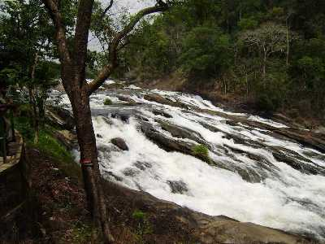

Thrissur is a city in the south Indian state of Kerala. It's known for sacred sites and colorful festivals. In the center is Vadakkumnathan Temple, dedicated to Lord Shiva and adorned with murals. The ornate, Indo-Gothic Our Lady of Dolours Basilica is nearby. To the north, Thiruvambady Temple is home to several elephants. Sakthan Thampuran Palace houses an archaeology museum with bronze statues and ancient coins.
The city is built around a 65-acre (26 ha) hillock called the Thekkinkadu Maidanam which seats the Vadakkumnathan temple. It is located 304 kilometres (189 mi) towards north-west of the state capital city Trivandrum.
Thrissur was once the capital of the Kingdom of Cochin.
Thrissur is known as "cultural capital of Kerala" because of its cultural, spiritual and religious leanings throughout history. One of its main cultural events is the Thrissur Pooram, which attracts quite a number of tourists and travellers

Vazhachal
There are tree shades and sitting arrangement built around is a good place to relax with friends and family. The rocky falls are really a must visit spot.
Shakthan Thampuran Palace
Preserved by the Archeological Department now, the Vadakkekara Palace was reconstructed in Kerala-Dutch style in the year 1795 by Sri. Ramavarma Thampuran of the erstwhile Princely State of Cochin.
Athiripally
Located 60 km from Thrissur city, Athirapally Falls is a haven for flora and fauna alike. It is a popular picnic spot and the scenic beauty of the waterfall offers spectacular visuals for visitors.